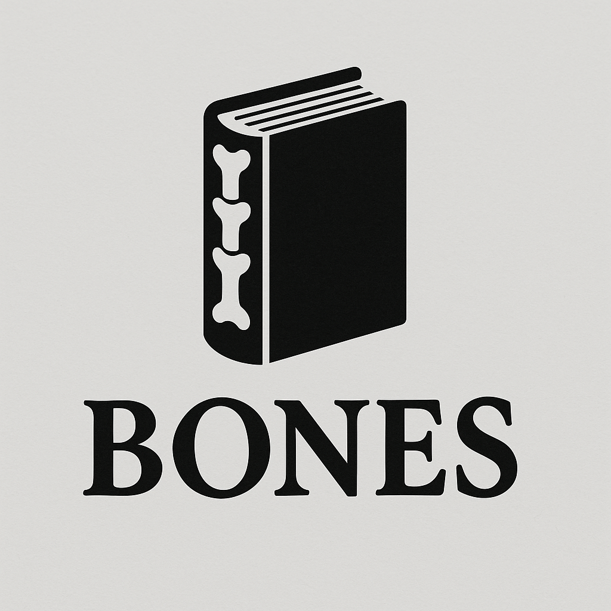

Track every change, never lose work, and fearlessly experiment with your manuscript
Git is a version control system - think of it as an unlimited "undo" button for your entire manuscript, combined with the ability to try different versions of your story without losing the original.
When you use Bones, every change you make to your manuscript can be saved as a "commit" - a snapshot of your work at that moment. You can always go back to any previous snapshot, compare different versions, or even work on multiple versions simultaneously.
Each circle above represents a saved version of your manuscript. You can jump back to any of these points at any time.
Every version of your manuscript is saved. Accidentally deleted a chapter? Overwrote something important? Just go back to the previous version.
Want to try killing off a character or rewriting Act 2? Create a branch, experiment freely, and keep or discard changes without affecting your main manuscript.
See exactly what you changed between drafts. Perfect for understanding your revision process or showing editors specific modifications.
When Bones runs AI editing, it creates a new branch. Review the AI's suggestions, accept what you like, and reject what you don't - the original is always safe.
Work with co-authors, editors, or beta readers. Each person can make changes without interfering with others' work.
Remember that scene you deleted three months ago? With Git, you can travel back in time and retrieve it.
You're not sure if your protagonist should survive. Create a branch to try the tragic ending while keeping the happy ending safe.
Now you have both endings saved. Compare them, show them to beta readers, or pick the one that works best!
# Create a branch for the experiment
git checkout -b alternate-ending
# Work on your changes...
# When done, either merge it:
git checkout main
git merge alternate-ending
# Or discard it and keep the original:
git checkout main
git branch -D alternate-endingBones' AI copy editor suggests changes to your prose. It automatically creates a branch so you can review before accepting.
# Bones automatically runs:
bones copyedit
# Review the changes:
git diff main
# Accept all changes:
git merge copyedit/20241121
# Or accept only some changes:
git checkout -p copyedit/20241121 -- src/You've spent all day revising Chapter 5, but now you realize the original was better.
With Git, you can simply revert to the original - nothing is ever truly lost!
# See your history
git log --oneline
# Go back to a specific version
git checkout abc123 -- src/chapters/05-chapter-five.md
# Or revert the last commit entirely
git revert HEADYou need a PG-13 version and an R-rated version of your novel. Use branches to maintain both!
Both versions share the same core story, but you can maintain different content levels and merge common fixes to both!
Write meaningful commit messages like "Added backstory for villain in Chapter 3" instead of "Changes". Future you will thank present you when looking through history!
The most important thing to understand about Git: once you commit something, it's saved forever (unless you explicitly delete it). You can experiment freely, make bold changes, and try crazy ideas - your original work is always there to return to.
Think of Git as a time machine for your manuscript. Every saved state (commit) is a destination you can travel back to at any moment.
Bones handles most of the Git complexity for you. Here are the basics:
# Initialize your book project (sets up Git automatically)
bones init
# Make changes to your manuscript...
# Then save them:
git add .
git commit -m "Added Chapter 4: The Discovery"
# Run AI editing (automatically creates a branch)
bones copyedit
# View the changes
git diff main
# Accept or reject as you see fit
git merge copyedit/20241121 # Accept
# OR
git branch -D copyedit/20241121 # RejectYou don't need to master Git to benefit from it. The three commands you'll use 90% of the time:
git add . - Stage your changesgit commit -m "message" - Save a snapshotgit diff - See what changedBones handles the rest automatically!